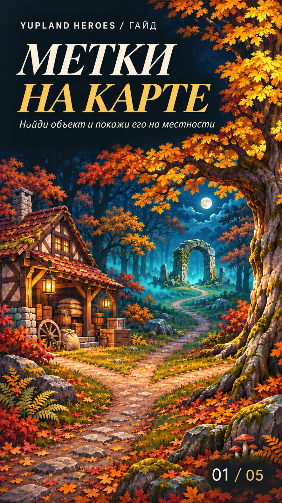
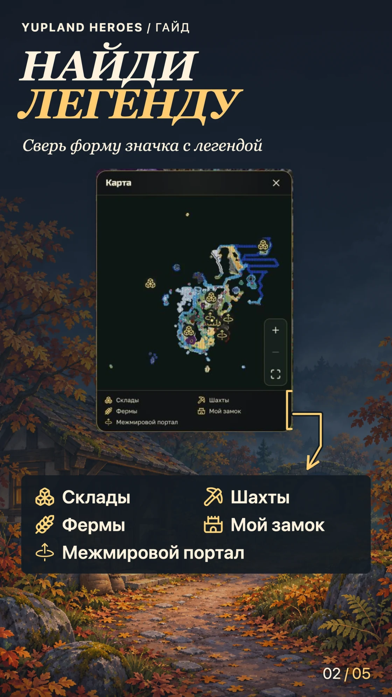
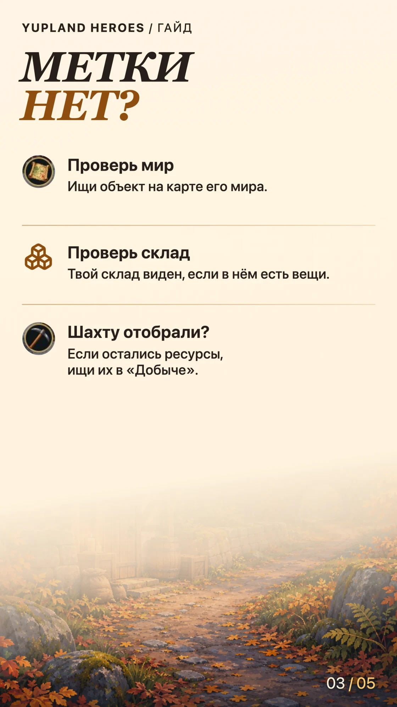
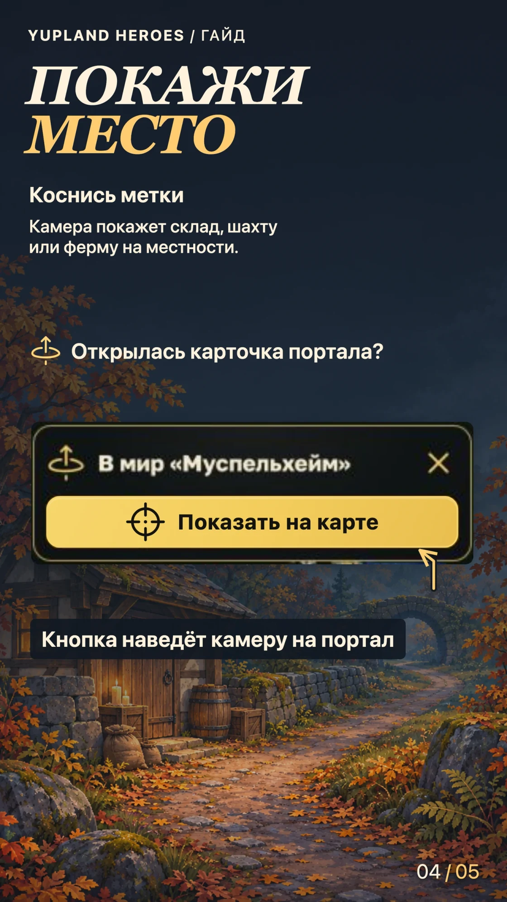
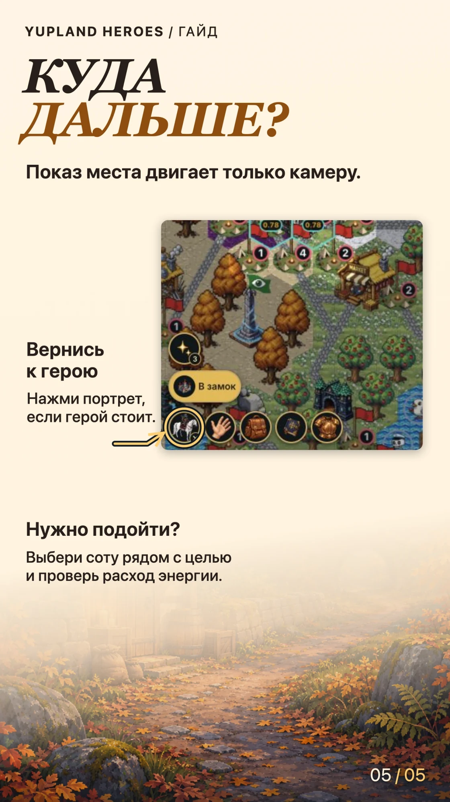

Метки на карте Yupland Heroes
-
Обложка 
-
Шаг 01 
-
Шаг 02 
-
Шаг 03 
-
Шаг 04 
Найди нужную метку
Открой окно «Карта» и посмотри на легенду внизу. Если есть вкладки, выбери «Моя карта». Три кубика обозначают склад, кирка — шахту, колос — ферму, башни — твой замок, кольцо со стрелкой — межмировой портал. Если метки сливаются, нажми + справа и сверь форму значка с легендой.
Если метки нет
- Объект в другом мире. Ищи его на карте того мира. В «Добыче» могут быть шахты и фермы сразу из нескольких миров.
- Склад пуст. Метка появится, когда в складе будут вещи.
- Шахту отобрали. Её метка исчезнет. Остаток ресурсов к сбору можно проверить в окне «Добыча».
Покажи объект на местности
Коснись нужной метки. При выборе склада, шахты или фермы окно закроется и камера покажет место. У портала сначала открывается карточка. Нажми в ней «Показать на карте».
Вернись к герою или подойди к цели
Показ места двигает только камеру. Если герой стоит, нажми его портрет слева внизу, чтобы вернуть к нему обзор. Чтобы подойти к объекту, выбери достижимую соту рядом и проверь расход энергии в плашке маршрута.